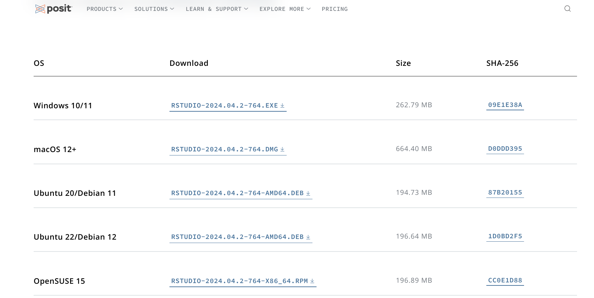
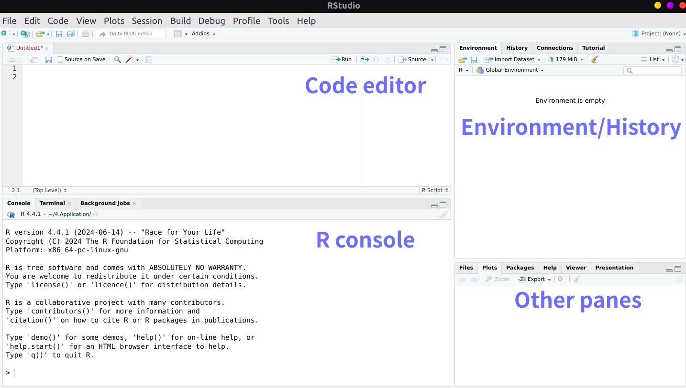
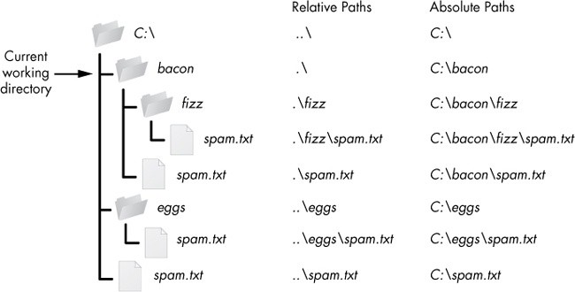

Chapter 1. R: The Beginning of Your Data Journey#
1.1 Basic Introduction#
This chapter aims to lay down the foundations of your data journey to use R. By the end of the chapter, you will know:
How to install the R and R studio in your computer
Small tips when using the R studio
The basic syntax and programming conventions for biological computing
1.1.1 What is R ?#
R is a freely available programming language and software environment for statistical computing and graphics. Based on the commercial statistical software S, the first stable version appeared in 2000. It is now widely used among professional scientists and data scientists for data analysis, visualization, and machine learning.
Timeline of R history with selected milestones. (Giorgi FM, 2022)
1.1.2 Why R?#
There are commercial software packages (GraphPad, SPSS, etc) available that offer advanced statistical tests, customizable graphs, and easy-to-use interfaces that allow users to easily navigate through the software. Why not just use them? Here are some thoughts:
Personalized analysis: You can tailor your analysis rather than trying to use the more limited options in the commerical software.
Rich package ecosystem: You can use the pre-built and tested packages shared by the R community for analysis and other purpose.
Great reproducibility: You can build a perfectly repeatable record and scripts of your analysis, which is not always possible with commercial tools. Run your complex analysis with one click (in the future) !
Easy scaling: You can work with large datasets with a fast and memory-efficient way in R.
Freely available: Help yourself in CRAN website
1.1.3 Installing R and RStudio#
RStudio is an interactive integrated development environment (IDE) for R, which enables programmers to code efficiently.
Also, note that it is not necessary to have RStudio in order to use R, but RStudio is highly recommended.
The installation varies depending on the operating system you use.
R in Windows#
The current version of R can be obtained from the Comprehensive R Archive Network Windows download page. Then click on the latest release link (Something like Download R 4.4.1 for Windows). Run the installer and accept all of the default options.
R in Mac#
The current version of R can be obtained from the Comprehensive R Archive Network Mac download page. Then click on the latest release link (it will be called something like R-4.4.1-arm64.pkg). Run the installer and accept all of the default options.
R in other OS#
Help yourself in CRAN website.
RStudio#
RStudio can be installed from the RStudio install page. Select the link depending on your OS, run the installer and accept the default options.
1.2 Getting familiar with RStudio and R#
First, launch your RStudio.
RStudio includes
a text editor, (You can write and record your code here. To starting a new code, you can click on
File, thenNew File, thenR Script. Explore other features by yourself),
a console to execute your code,
a panel shows the current variables, function and history in your current R work space (RStudio will launch a new work space when you launch the rstudio, unless you save the current working space in a file).
Other panes including
Plots(Show Figures you produced),Files(Show the current working directory),Packages(Show the packages that the R had),Help(Show the help document regarding specific packages or functions)
You can click on each tab to move across the different features.
You must now getting confused about some of the terms (like “function”) used. No worries, let’s go ahead!
1.2.1 Brief Introduction to the terms#
Term |
Explanation |
|---|---|
Session |
A period of time during which R is running and objects are created, modified, and analyzed. |
Directory |
Where files are read from or written during R sessions. |
Code |
A series of instructions or commands written in the R language to perform specific tasks. |
Console |
The command line interface in R where code is entered, executed, and results are displayed. |
Variable |
Store values or data, can be modified or accessed for calculations or analysis. |
Datasets |
Collections of data stored in tables or matrices for analysis in R, can be imported from files or created within R. |
Function |
Reusable code that performs specific tasks, can be written or sourced from libraries. |
Packages |
Collections of functions, datasets, and documentation that extend the capabilities of base R for specific tasks |
Work Space |
An environment where R objects (such as variables, functions, datasets, etc.) are stored during a session. |
1.2.2 Useful R commands#
After you have a basic idea about the coding terms. We could have a first glance at the Command used in R.
Command |
What it does |
|---|---|
|
list all the variables in the work space |
|
remove variable(s) |
|
remove all variable(s) |
|
get current working directory |
|
set working directory to |
|
create directory to |
|
Whether the directory |
|
list the directory under |
|
quit R |
|
collect Information About the Current R Session |
|
show the documentation of |
|
search the all packages/functions with ‘Keyword’, “fuzzy search” |
Try type in the getwd() in your R console, and enter.
Relative and absolute directory#
A relative directory is a file path that is relative to the current working directory.
if the current working directory is “C:/Users/FinCourse/document”, a relative directory could be “data/file.csv”, which would refer to the file “file.csv” located in the “data” folder within the current working directory.
An absolute path describes the location from the root directory.
Case Exercise 1. Directory puzzle#
You can find the “puzzle” in case1 under the “document”. Use the R command listed in 1.2.2, Change the current working directory to the directory called exit, then create a directory win there. Then come back to the previous working directory.
1.2.3 Magic when using R#
Below we show examples for:
1.Syntax highlighting and indentation,
R can help you highlight different syntax (e.g. function, variable etc)
Ensuring proper indentation is crucial for enhancing the readability of your code. RStudio can assist you in automatically formatting the indentation of your code. In R, adhering to correct syntax allows your code to execute successfully, even if you have not maintained consistent indentation practices. Conversely, in languages like Python, improper indentation can lead to code execution errors, making it essential to follow strict indentation rules for the code to run correctly.
2.automatic code completion,
Use Tab to finish function names, file paths, arguments and more
3.Up and down arrow keys scroll through your command history.
Use “Up” and “down” in your keyboard to scroll through the command you input to the R console.
# This is the function to calculate the sum of input parameter a and b
sumAB <- function(a,b){ # try type this function in your code file,
a + b
}
sumAB(1,2) # Try type sumA and then `Tab`
Cell In[1], line 2
sumAB <- function(a,b){ # try type this function in your code file,
^
SyntaxError: invalid syntax
dir.exists("../") # Try `Tab` after "/", see what you get from `Tab`
sumAB(1,2) # Try scroll your history code to rerun the previous code
Help your self with the built-in cheatsheet#
Find the keyboard shortcuts help in the Help.
One of the most frequently used shortcut is
CTRL + ENTER <———> Run selected Line(s)
1.2.4 Install R packages#
The capabilities offered by a fresh installation of R represent just a fraction of the full range of possibilities available. The extra functionality comes from add-ons available from developers from all over the world, known as Packages.
# Install vegan packages, which is widely used in microbiome study
install.packages("vegan")
# load vegan
library(vegan)
Updating HTML index of packages in '.Library'
Making 'packages.html' ...
done
Loading required package: permute
Warning message:
“package ‘permute’ was built under R version 4.2.3”
Loading required package: lattice
Warning message:
“package ‘lattice’ was built under R version 4.2.3”
This is vegan 2.6-8
There are other tools used to download and install packages, see devtools and BiocManager